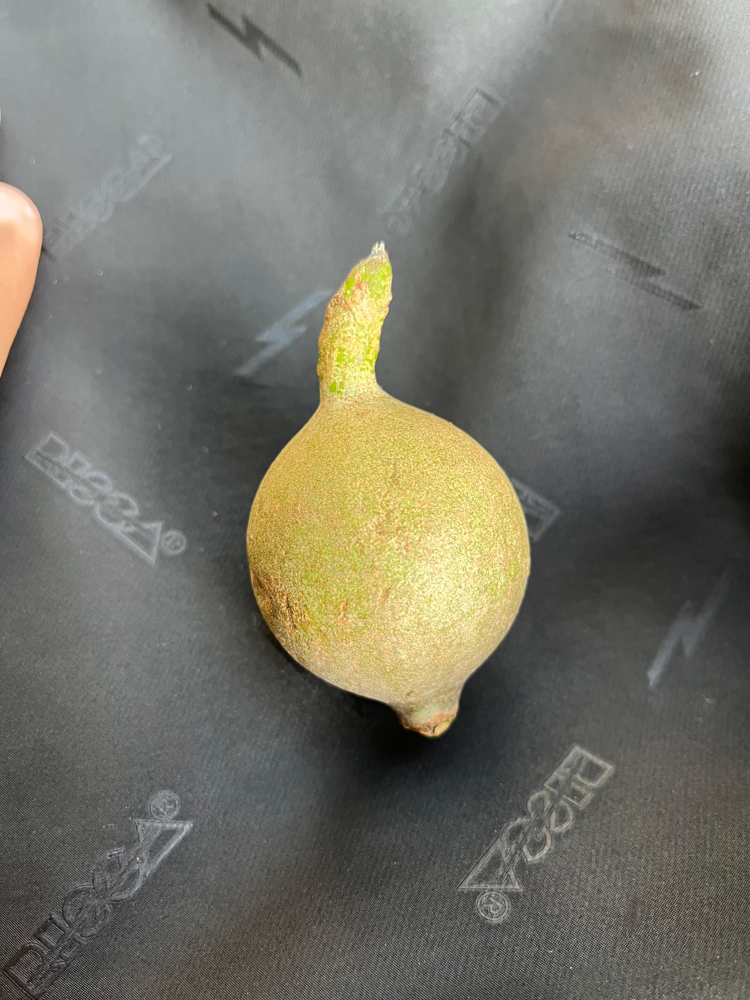

Tipuana
Tipuana tipu

Informações Botânicas
Nome Científico:
Genipa americana
Família:
Rubiaceae
Origem:
Todo o Brasil
Descrição:
Árvore de 8 a 14 metros de altura, com tronco reto e folhas grandes, simples e brilhantes. É uma planta semidecídua, que perde parte de suas folhas, e floresce na primavera e verão (outubro a dezembro). Seus frutos, grandes e arredondados, amadurecem quase ao mesmo tempo que a nova florada. São muito conhecidos e versáteis: quando verdes, fornecem um suco que vira uma tinta azul-escura; quando maduros, sua polpa é usada para fazer doces, suco, vinho e o famoso licor de jenipapo.
Características Especiais:
- Tinta Natural do Fruto:Seu fruto verde produz um corante natural de cor azul-escura a preta, muito usado historicamente por povos indígenas para pintura corporal.
- Fruto Comestível e Versátil:Quando maduro, o fruto é usado na produção de doces e do tradicional licor de jenipapo.
- Parente do Café:Pertence à mesma família botânica do café, uma curiosidade sobre sua linhagem.
- Planta de Áreas Úmidas:É uma espécie que prospera em solos encharcados e várzeas, sendo importante para a recuperação desses ecossistemas.